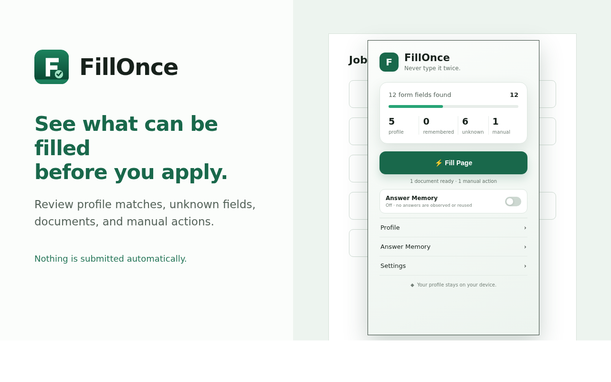

Reusable Profile
Save identity, contact, education, employment, skills, preferences, and work-authorization details once.
Chrome Extension
Manifest V3 · Local-first
FillOnce helps job seekers reuse profile details and documents across repetitive application forms—without surrendering control of the final application.
Built for job applications
FillOnce focuses on employment forms—not banking, medical, payment, authentication, or general-purpose form automation.
Save identity, contact, education, employment, skills, preferences, and work-authorization details once.
Attach a locally stored resume or cover letter to compatible file inputs with filename and size verification.
Handles standard inputs, selects, radios, checkboxes, custom controls, embedded frames, and open shadow roots.
Reuse approved answers when enabled. Answer Memory and experimental automatic remembering are both off by default.
See matched, unknown, preserved, document, and manual-review fields before deciding what to submit.
Passwords, OTPs, payments, government IDs, CAPTCHAs, signatures, certifications, and consent remain untouched.
The workflow
Add only the details and documents you want FillOnce to use.
FillOnce detects supported fields across the application page and embedded frames.
Check profile matches, document readiness, unknown fields, and manual actions.
FillOnce applies compatible values. You review the final form and decide whether to submit.

Local-first privacy
Compatibility
FillOnce supports conventional HTML forms and many modern applicant-tracking-system patterns. Websites can change, and some custom controls will still require manual entry.
Always inspect the completed form, verify attachments, and confirm sensitive answers before submission.
Read the complete Privacy PolicyThe extension is being tested across job-application workflows before its public Chrome Web Store release.